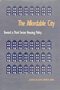
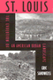
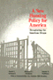
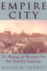

 <!DOCTYPE HTML PUBLIC "-//W3C//DTD HTML 4.0 Transitional//EN">
<html><!-- InstanceBegin template="/Templates/subjects.dwt" codeOutsideHTMLIsLocked="false" -->
<head>
<!-- InstanceBeginEditable name="doctitle" --> 
<title>Urban Studies</title>
<!-- InstanceEndEditable --> 
<link rel="stylesheet" href="style.css" type="text/css">
<!-- InstanceBeginEditable name="head" --><!-- InstanceEndEditable --> <!-- InstanceParam name="Our Books" type="URL" value="img/our_books.gif" -->
</head>
<!-- Site designed by D a w n  D a n i s h, Copyright 2005 Temple University.  All Rights Reserved. -->
<body bgcolor="#FFFFFF" leftMargin="0" topMargin="0" rightMargin="0">
<!-- top banner table -->
<table width="100%" border="0" cellpadding="0" cellspacing="0">
  <tr> 
    <td valign="top" align="left" width="100%" nowrap><a name="top"></a><!-- InstanceBeginEditable name="header" --><!-- InstanceEndEditable --></td>
  </tr>
  <!-- navigation -->
  <tr> 
    <td bgcolor="#990033"></td>
  </tr>
  <tr> 
    <td bgcolor="#E5DCCB"></td>
  </tr>
  <tr> 
    <td align="center" valign="top" nowrap bgcolor="3D607A"><span class="navigation"><a class="navigation" href="index.html" TITLE="Welcome to Temple University Press">Home</a> 
      | <a class="navigation" href="books.html" TITLE="Browse our catalog or search for a book">Our 
      Books</a> | <a class="navigation" href="contact.html" TITLE="Questions? Comments? Tell us!">Contact 
      Us</a> | <a class="navigation" href="order.html" TITLE="Online ordering or order by phone, fax, or mail">Place 
      an Order</a> | <a class="navigation" href="br.html" TITLE="Book Reviews">Media</a> 
      | <a class="navigation" href="press.html" TITLE="Meet the Press">Press 
      Info</a> | <a class="navigation" href="links.html" TITLE="Other university press resources">Links</a> 
      </span></td>
  </tr>
  <tr> 
    <td bgcolor="#3D607A"></td>
  </tr>
  <tr> 
    <td bgcolor="#333333"></td>
  </tr>
</table>
<table border="0" cellspacing="0" cellpadding="0" width="100%">
  <!--DWLayoutTable-->
    <tr valign="top"> 
      <td width="200" align="left" valign="top" bgcolor="#E5DCCB"> 
        <!-- left menu -->
         <table border="0" cellspacing="0" cellpadding="5" width="100%">
          <tr valign="top"> 
            <td valign="top" align="left"><p class="leftnav"><a href="awards.html" TITLE="Read about award-winning books"> 
              Award-Winning Books</a><p class="leftnav">
                <a href="subjects.html" TITLE="Over 30 subject categories to browse">Subject 
                Index</a><p class="leftnav">
                <a href="series.html" TITLE="Books in series">Series 
                Listing</a><p class="leftnav">
                <a href="studyguides/index.html" TITLE="For further study">Study 
                Guides</a><br>&nbsp;</td>
          </tr>
        </table></td>      
    <td valign="top" align="left" width="100%"> 
      <!-- InstanceBeginEditable name="content table" --> 
      <table border="0" cellspacing="0" cellpadding="12" width="100%">
        <!--DWLayoutTable-->
        <tr> 
          <td width="75" valign="top" align="right"><p class="normal"><a href="titles/1883_reg.html"></a></td>
          <td valign="top" align="left"><p class="normal"><a href="titles/1883_reg.html"><b>Citizen 
              Lobbyists<br>
              </b>Local Efforts to Influence Public Policy<br>
              </a>Adams, Brian </p>
            <p><span class="small">248 pp &#149; 5.5x8.25 &#149; Fall 2006<br>
              paper  978-1-59213-570-7<br>
			  cloth 978-1-59213-569-1</span></p>
			</td>
        </tr>
        <tr> 
          <td width="75" valign="top" align="right"><a href="titles/712_reg.html"></a></td>
          <td valign="top" align="left"><a href="titles/712_reg.html"><b>Philadelphia<br>
            </b>Neighborhoods, Division, and Conflict in a Post-Industrial City</a><br>
            Adams, Carolyn, David Bartelt, David Elesh, Ira Goldstein, Nancy Kleniewski 
            and William Yancey <p class="small">224 pp &#149; 6x9 &#149; 
              Fall 1991<br>
              paper 978-1-56639-078-1<br>
              cloth 978-0-87722-842-4<br>
               </p></td>
        </tr>
		 <tr>
                <td width="75" valign="top" align="right"><a href="titles/712a_reg.html"></a></td>
          <td valign="top" align="left"><a href="titles/712a_reg.html"><font size="2" face="Verdana, Arial, Helvetica, sans-serif"><b>Restructuring the Philadelphia Region<br>
            </b>Metropolitan Divisions and Inequality</font></a><br>
                  <font size="2" face="Verdana, Arial, Helvetica, sans-serif">Adams, Carolyn, David W. Bartelt, David Elesh and Ira Goldstein with Michelle Schmitt and Joshua Freely</font>
                  <p class="small">248 pp &#149; 6x9 &#149; Fall 2008 <br>
                    paper 978-1-59213-897-5<br>
                    cloth  978-1-59213-896-8<br>
               </p></td>
        </tr>
		<tr>
                <td width="75" valign="top" align="right"><a href="titles/2025_reg.html"></a></td>                
          <td valign="top" align="left"><a href="titles/2025_reg.html"><font size="2" face="Verdana, Arial, Helvetica, sans-serif"><b>Living in the Crossfire<br>
            </b>Favela Residents, Drug Dealers, and Police Violence in Rio de Janeiro</font></a><br>
                  <font size="2" face="Verdana, Arial, Helvetica, sans-serif">Alves, Maria Helena Moreira and Philip Evanson</font>
                  <p class="small">254 pp &bull; 6x9 &bull; Spring 2011<BR>
                    paper 978-1-4399-0004-8<BR>
                  cloth  978-1-4399-0003-1<br>
               </p></td>
        </tr>
              <tr>
                <td width="75" valign="top" align="right"><a href="titles/2232_reg.html"></a></td>
          <td valign="top" align="left"><a href="titles/2232_reg.html"><font size="2" face="Verdana, Arial, Helvetica, sans-serif"><b>Atlanta Unbound<br>
            </b>Enabling Sprawl through Policy and Planning</font></a><br>
                  <font size="2" face="Verdana, Arial, Helvetica, sans-serif">Basmajian, Carlton Wade</font>
                  <p class="small">288 pp &#149; 7x10 &#149; Fall 2013<br>
                          paper  978-1-4399-0940-9<br>
    cloth  978-1-4399-0939-3</p></td>
              </tr>
              <tr>
                <td width="75" valign="top" align="right"><a href="titles/2258_reg.html"></a></td>
                
          <td valign="top" align="left"><a href="titles/2258_reg.html"><font size="2" face="Verdana, Arial, Helvetica, sans-serif"><b>Local Protest, Global Movements<br>
            </b>Capital, Community, and State in San Francisco</font></a><br>
                  <font size="2" face="Verdana, Arial, Helvetica, sans-serif">Beitel, Karl </font>
                  <p class="small">230 pp &#149; 6x9 &#149; Spring 2013<br>
                    paper 978-1-4399-0995-9
					<br>
                    cloth 978-1-4399-0994-2<BR>
                </p></td>
              </tr>
        <tr> 
          <td width="75" valign="top" align="right"><a href="titles/1654_reg.html"></a></td>
          <td valign="top" align="left"><a href="titles/1654_reg.html"><b>City 
            and Environment</b></a><br>
            Boone, Christopher G. and Ali Modarres 
            <p class="small">240 pp &#8226; 6x9 &#8226; Spring 2006<br>
              paper  978-1-59213-284-3<br>
			  cloth 978-1-59213-283-6<br>
                </p></td>
        </tr>
        <tr> 
          <td width="75" valign="top" align="right"><a href="titles/493_reg.html"></a></td>
          <td valign="top" align="left"><a href="titles/493_reg.html"><b>Rebuilding 
            a Low-Income Housing Policy</b></a><br>
            Bratt, Rachel G. <p class="small">368 pp &#149; Spring 1989<br>
              paper 978-1-56639-263-1<br>
              cloth  978-0-87722-595-9</p></td>
        </tr>
        <tr> 
          <td width="75" valign="top" align="right"><a href="titles/1301_reg.html"></a></td>
          <td valign="top" align="left"><a href="titles/1301_reg.html"><b>A 
            Right to Housing<br>
            </b>Foundation for a New Social Agenda</a><br>
            edited by Bratt, Rachel G., Michael E. Stone and Chester Hartman 
            <p class="small">448 pp &#149; 7x10 &#149; Fall 2005<br>
              paper  978-1-59213-432-8<br>
              cloth  978-1-59213-431-1<br>
                </p></td>
        </tr>
        <tr> 
          <td width="75" valign="top" align="right"><a href="titles/383_reg.html"></a></td>
          <td valign="top" align="left"><a href="titles/383_reg.html"><b>Critical 
            Perspectives on Housing</b></a><br>
            edited by Bratt, Rachel G., Chester Hartman and Ann Meyerson 
            <p class="small">600 pp &#149; Fall 1985<br>
              paper 978-0-87722-396-2<br>
              cloth  978-0-87722-395-5</p></td>
        </tr>
        <tr> 
          <td width="75" valign="top" align="right"><a href="titles/1146_reg.html"></a></td>
          <td valign="top" align="left"><a href="titles/1146_reg.html"><b>In 
            Timber Country<br>
            </b>Working People's Stories of Environmental Conflict and Urban Flight</a><br>
            Brown, Beverly A. <p class="small">336 pp &#149; 6x9 &#149; 
              Spring 1995<br>
              paper  978-1-56639-273-0<br>
              cloth  978-1-56639-272-3</p></td>
        </tr>
		<tr>
                <td width="75" valign="top" align="right"><a href="titles/2351_reg.html"></a></td>
                
          <td valign="top" align="left"><a href="titles/2351_reg.html"><font size="2" face="Verdana, Arial, Helvetica, sans-serif"><b>Walking in Cities<br>
            </b>Quotidian Mobility as Urban Theory, Method, and Practice</font></a><br>
                  <font size="2" face="Verdana, Arial, Helvetica, sans-serif">edited by Brown, Evrick and Timothy Shortell</font>
                  <p class="small">292 pp &#149; 6x9 &#149; Fall 2015<br>
                    paper  978-1-4399-1221-8 <br>
          cloth  978-1-4399-1220-1</p></td>
        </tr>
        <tr> 
          <td width="75" valign="top" align="right"></td>
          <td valign="top" align="left"><a href="titles/326_reg.html"><b>Race 
            Relations in Wartime Detroit<br>
            </b>The Sojourner Truth Housing Controversy, 1937-1942</a><br>
            Capeci, Jr., Dominic J. <p class="small">Spring 1984<br>
              cloth 978-0-87722-339-9</p></td>
        </tr>
        <tr> 
          <td width="75" valign="top" align="right"><a href="titles/1491_reg.html"></a></td>
          <td valign="top" align="left"><a href="titles/1491_reg.html"><b>Smuggled 
            Chinese<br>
            </b>Clandestine Immigration to the United States</a><br>
            Chin, Ko-lin, foreword by Douglas S. Massey <p class="small">296 
              pp &#149; 6x9 &#149; Fall 1999<br>
              paper  978-1-56639-733-9<br>
              cloth  978-1-56639-732-2<br>
               </p></td>
        </tr>
        <tr> 
          <td width="75" valign="top" align="right"><a href="titles/784_reg.html"></a></td>
          <td valign="top" align="left"><a href="titles/784_reg.html"><b>Seeing 
            New York<br>
            </b>History Walks for Armchair and Footloose Travelers</a><br>
            Cooke, Hope <p class="small">464 pp &#149; 6x9 &#149; Spring 
              1995<br>
              paper 978-1-56639-289-1<br>
              cloth  978-1-56639-288-4</p></td>
        </tr>
        <tr> 
          <td width="75" valign="top" align="right"><a href="titles/1572_reg.html"></a></td>
          <td valign="top" align="left"><a href="titles/1572_reg.html"><b>Migration, 
            Transnationalization, and Race in a Changing New York</b></a><br>
            edited by Cordero-Guzmán, Héctor R., Robert C. Smith and Ramón Grosfoguel 
            <p class="small">320 pp &#149; 7x10 &#149; Fall 2001<br>
              paper 978-1-56639-888-6<br>
              cloth  978-1-56639-887-9<br>
               </p></td>
        </tr>
        <tr>
                <td width="75" valign="top" align="right"><a href="titles/2399_reg.html"></a></td>
                
          <td valign="top" align="left"><a href="titles/2399_reg.html"><font size="2" face="Verdana, Arial, Helvetica, sans-serif"><b>A Nice Place to Visit</b><br> Tourism and Urban Revitalization in the Postwar Rustbelt</font></a><br>
                  <font size="2" face="Verdana, Arial, Helvetica, sans-serif">Cowan, Aaron</font>
                  <p class="small">236 pp &#149; 6x9  &#149; Spring 2016<br>
                    paper 978-1-4399-1346-8<br>cloth 978-1-4399-1345-1<br>
                   </p></td>
              </tr>
        <tr> 
          <td width="75" valign="top" align="right"><a href="titles/507_reg.html"></a></td>
          <td valign="top" align="left"><a href="titles/507_reg.html"><b>Detroit<br>
            </b>Race and Uneven Development</a><br>
            Darden, Joe T., Richard Child Hill, June Thomas and Richard Thomas 
            <p class="small">336 pp &#149; Fall 1987<br>
              paper  978-0-87722-776-2<br>
              cloth  978-0-87722-485-3<br>
               </p></td>
        </tr>
              <tr>
                <td width="75" valign="top" align="right"><a href="titles/2367_reg.html"></a></td>
                
          <td valign="top" align="left"><a href="titles/2367_reg.html"><font size="2" face="Verdana, Arial, Helvetica, sans-serif"><b>BITS of Belonging<br>
            </b>Information Technology, Water, and Neoliberal Governance in India</font></a><br>
                  <font size="2" face="Verdana, Arial, Helvetica, sans-serif">Dasgupta, Simanti</font>
                  <p class="small">232 pp &#149; 6x9 &#149; Fall 2015<br>
                    paper 978-1-43991-259-1<br>
                cloth 978-1-43991-258-4</p></td>
              </tr>
		<tr> 
          <td width="75" height="114" align="right" valign="top"><p class="normal"><a href="titles/2123_reg.html"></a></td>
          <td valign="top" align="left"><p class="normal"><a href="titles/2123_reg.html"><b>Saving San Francisco</b><br>
          Relief and Recovery after the 1906 Disaster</a><br>
		  Davies, Andrea Rees </p>
            <p class="small">
			232 pp &#149; 6x9 &#149; Fall 2011<br>
            paper 978-1-4399-0433-6<br>
            cloth 978-1-4399-0432-9<br>
               </p></td>
       </tr>
        <tr> 
          <td width="75" valign="top" align="right"><a href="titles/1015_reg.html"></a></td>
          <td valign="top" align="left"><a href="titles/1015_reg.html"><b>Urban 
            Leviathan<br>
            </b> Mexico City in the Twentieth Century</a><br> Davis, Diane E. 
            <p class="small">424 pp &#149; 6x9.25 &#149; 
              Spring 1994<br>
              paper 978-1-56639-151-1<br>
              cloth 978-1-56639-150-4<br>
               </p></td>
        </tr>
        <tr> 
          <td width="75" valign="top" align="right"><a href="titles/409_reg.html"></a></td>
          <td valign="top" align="left"><a href="titles/409_reg.html"><b>Conspicuous 
            Production<br>
            </b>Automobiles and Elites in Detroit, 1899-1933</a><br>
            Davis, Donald Finlay <p class="small">320 pp &#149; Fall 1988<br>
              cloth 978-0-87722-549-2</p></td>
        </tr>
        <tr> 
          <td width="75" valign="top" align="right"><a href="titles/1128_reg.html"></a></td>
          <td valign="top" align="left"><a href="titles/1128_reg.html"><b>The 
            Affordable City<br>
            </b>Toward a Third Sector Housing Policy</a><br>
            edited by Davis, John Emmeus <p class="small">320 pp &#149; 
              6x9 &#149; Fall 1993<br>
              cloth 978-1-56639-109-2<br>
               </p></td>
        </tr>
        <tr> 
          <td width="75" valign="top" align="right"><a href="titles/1264_reg.html"></a></td>
          <td valign="top" align="left"><a href="titles/1264_reg.html"><b>Something 
            Left to Lose<br>
            </b>Personal Relations and Survival among New York's Homeless</a><br>
            Dordick, Gwendolyn A. <p class="small">224 pp &#149; 5.5x8.25 
              &#149; Spring 1997<br>
              paper 978-1-56639-514-4<br>
              cloth 978-1-56639-513-7</p></td>
        </tr>
              <tr>
                <td width="75" valign="top" align="right"><a href="titles/2148_reg.html"></a></td>
          <td valign="top" align="left"><a href="titles/2148_reg.html"><font size="2" face="Verdana, Arial, Helvetica, sans-serif"><b>Baltimore '68<br>
            </b>Riots and Rebirth in an American City</font></a><br>
                  <font size="2" face="Verdana, Arial, Helvetica, sans-serif">edited by Elfenbein, Jessica I., Thomas L. Hollowak, and Elizabeth M. Nix</font>
                  <p class="small">294 pp &bull; 6x9 &bull; Spring 2011<BR>
                    paper  978-1-4399-0662-0<BR>
                  cloth 978-1-4399-0661-3<br>
               </p></td>
              </tr>
               <tr> 
          <td width="75" valign="top" align="right"><p class="normal"><a href="titles/2381_reg.html"></a></td>
          <td valign="top" align="left"><p class="normal"><a href="titles/2381_reg.html"><b>Philadelphia<br>
              </b>Finding the Hidden City </a><br>
              Elliott, Joseph E. B., Nathaniel Popkin, and Peter Woodall </p>
            <p class="small">200 pp &#149; 7.875 x 10.5 &#149; Fall 2017<br>
              
              cloth  978-1-4399-1300-0</p></td>
        </tr>
        <tr> 
          <td width="75" valign="top" align="right"><a href="titles/2047_reg.html"></a></td>
          <td valign="top" align="left"><a href="titles/2047_reg.html"><b>Pushing Back the Gates<br>
            </b>Neighborhood Perspectives on University-Driven Revitalization in West Philadelphia</a><br>
            Etienne, Harley F.<p class="small">192 pp &#149; 6x9 &#149; Spring 2012<br>
                                    paper  978-1-4399-0069-7
            <br>
              cloth 978-1-4399-0068-0<br>
               </p></td>
        </tr>
              <tr>
                <td width="75" valign="top" align="right"><a href="titles/2303_reg.html"></a></td>
                
          <td valign="top" align="left"><a href="titles/2303_reg.html"><font size="2" face="Verdana, Arial, Helvetica, sans-serif"><b>The War on Slums in the Southwest<br>
            </b>Public Housing and Slum Clearance in Texas, Arizona, and New Mexico, 1935-1965</font></a><br>
                  <font size="2" face="Verdana, Arial, Helvetica, sans-serif">Fairbanks, Robert B. </font>
                  <p class="small"><br>
                  252 pp &#149; 6x9 &#149; Spring 2014<br>
                    paper 978-1-4399-1116-7<br>
                    cloth  978-1-4399-1115-0</p></td>
              </tr>
		<tr> 
          <td width="75" valign="top" align="right"><p class="normal"><a href="titles/2072_reg.html"></a></td>
          <td valign="top" align="left"><p class="normal"><a href="titles/2072_reg.html"><b>The Public and Its Possibilities<br>
          </b>
          Triumphs and Tragedies in the American City<br>
              </a>Fairfield, John D.</p>
			<p class="small">
			368 pp &#149; 6x9 &#149; Spring 2010<br>
             paper  978-1-4399-0211-0<br>
            cloth  978-1-4399-0210-3<br>
                
           </p></td>
        </tr>
		<tr> 
          <td width="75" valign="top" align="right"><p class="normal"><a href="titles/2022_reg.html"></a></td>
          <td valign="top" align="left"><p class="normal"><a href="titles/2022_reg.html"><b>To The City<br>
              </b>Urban Photographs of the New Deal<br>
              </a>Foulkes, Julia L.</p>
			<p class="small">
			142 pp &#149; 6x9 &#149; Fall 2010<br>
			paper 978-1-59213-998-9 <br>
			cloth  978-1-59213-997-2<br>
               </p></td>
        </tr>
        <tr> 
          <td width="75" valign="top" align="right"><a href="titles/1827_reg.html"></a></td>
          <td valign="top" align="left"><a href="titles/1827_reg.html"><b>There 
            Goes the 'Hood<br>
            </b>Views of Gentrification from the Ground Up</a><br>
            Freeman, Lance  <p class="small">248 pp &#8226; 6x9 &#8226; 
              Spring 2006<br>
              paper  978- 1-59213-437-3<br>
			  cloth   978- 1-59213-436-6<br>
               </p></td>
        </tr>
        <tr> 
          <td width="75" valign="top" align="right"></td>
          <td valign="top" align="left"><a href="titles/127_reg.html"><b>The 
            Urban Idea in Colonial America</b></a><br>
            Fries, Sylvia Doughty <p class="small">208 pp &#149; Spring 
              1978<br>
              cloth 978-0-87722-103-6</p></td>
        </tr>
        <tr> 
          <td width="75" valign="top" align="right"><a href="titles/954_reg.html"></a></td>
          <td valign="top" align="left"><a href="titles/954_reg.html"><b>Japanese 
            Cities in the World Economy</b></a><br>
            edited by Fujita, Kuniko and Richard Child Hill <p class="small">360 
              pp &#149; 6x9 &#149; Spring 1993<br>
              cloth 978-1-56639-034-7<br>
               </p></td>
        </tr>
        <tr> 
          <td width="75" valign="top" align="right"><a href="titles/504_reg.html"></a></td>
          <td valign="top" align="left"><a href="titles/504_reg.html"><b>Washington, 
            D.C.<br>
            </b>Inner-City Revitalization and Minority Suburbanization</a><br>
            Gale, Dennis E. <p class="small">259 pp &#149; Fall 1987<br>
              paper 978-0-87722-777-9<br>
              cloth 978-0-87722-496-9</p></td>
        </tr>
        <tr>
                <td width="75" valign="top" align="right"><a href="titles/2369_reg.html"></a></td>
                
          <td valign="top" align="left"><a href="titles/2369_reg.html"><font size="2" face="Verdana, Arial, Helvetica, sans-serif"><b>The Politics of Staying Put</b><br>Condo Conversion and Tenant Right-to-Buy in Washington, DC </font></a><br>
                  <font size="2" face="Verdana, Arial, Helvetica, sans-serif">Gallaher, Carolyn</font>
                  <p class="small">278 pp &#149; 6x9  &#149; Spring 2016<br>
                    paper 978-1-4399-1265-2<br>cloth 978-1-4399-1264-5<br>
                   </p></td>
              </tr>
<tr> 
          <td width="75" valign="top" align="right"><a href="titles/508_reg.html"></a></td>
          <td valign="top" align="left"><a href="titles/508_reg.html"><b>Rethinking 
            Rental Housing</b></a><br>
            Gilderbloom, John I. and Richard P. Appelbaum, foreword by Joe R. 
            Feagin <p class="small">296 pp &#149; Fall 1987<br>
              paper 978-0-87722-538-6<br>
              cloth 978-0-87722-498-3</p></td>
        </tr>
        <tr> 
          <td width="75" valign="top" align="right"><a href="titles/1672_reg.html"></a></td>
          <td valign="top" align="left"><a href="titles/1672_reg.html"><b>Workforce 
            Development Politics<br>
            </b>Civic Capacity and Performance</a><br>
            edited by Giloth, Robert P. <p class="small">296 pp &#149; 
              6x9 &#149; Fall 2003<br>
              paper  978-1-59213-229-4<br>
              cloth 978-1-59213-228-7<br>
               </p></td>
        </tr>
              <tr>
                <td width="75" valign="top" align="right"><a href="titles/2126_reg.html"></a></td>
                
          <td valign="top" align="left"><a href="titles/2126_reg.html"><font size="2" face="Verdana, Arial, Helvetica, sans-serif"><b>Environmental Activism and the Urban Crisis<br>
            </b>Baltimore, St. Louis, Chicago</font></a><br>
                  <font size="2" face="Verdana, Arial, Helvetica, sans-serif">Gioielli, Robert R. </font>
                  <p class="small">224 pp &#149; 6x9 &#149; Spring 2014<br>
                  paper 978-1-4399-0466-4<br>
                    cloth 978-1-4399-0465-7</p></td>
              </tr>
        <tr> 
          <td width="75" valign="top" align="right"><a href="titles/957_reg.html"></a></td>
          <td valign="top" align="left"><a href="titles/957_reg.html"><b>Shelter 
            Burden<br>
            </b>Local Politics and Progressive Housing Policy</a><br>
            Goetz, Edward G. <p class="small">264 pp &#149; 5.5x8.25 &#149; 
              Fall 1993<br>
              cloth  978-1-56639-055-2</p></td>
        </tr>
		 <tr> 
          <td width="75" valign="top" align="right"><p class="normal"><a href="titles/909a_reg.html"></a></td>
          <td valign="top" align="left"><p class="normal"><a href="titles/909a_reg.html"><b>Separate Societies</b><br>
		  Poverty and Inequality in U.S. Cities</a><br>
		  Second Edition<br>
			  Goldsmith, William W. and Edward J. Blakely</p>
			<p class="small"> 268 pp &#149; 6x9 &#149; Spring 2010<br>
    paper  978-1-43990-292-9 <br>
			cloth  978-1-43990-291-2<br>
               </p></td>
        </tr>
        <tr> 
          <td width="75" valign="top" align="right"><a href="titles/887_reg.html"></a></td>
          <td valign="top" align="left"><a href="titles/887_reg.html"><b>Reshaping 
            Ethnic and Racial Relations in Philadelphia<br>
            </b>Immigrants in a Divided City</a><br>
            Goode, Judith and Jo Anne Schneider <p class="small">296 pp 
              &#149; 6x9 &#149; Spring 1994<br>
              paper 978-1-56639-141-2<br>
              cloth 978-1-56639-140-5<br>
               </p></td>
        </tr>
        <tr> 
          <td width="75" valign="top" align="right"><a href="titles/360_reg.html"></a></td>
          <td valign="top" align="left"><a href="titles/360_reg.html"><b>Urban 
            Elders<br>
            </b>Family, Work, and Welfare Among Boston's Aged, 1890-1950</a><br>
            Gratton, Brian <p class="small">256 pp &#149; Fall 1985<br>
              cloth  978-0-87722-390-0</p></td>
        </tr>
		<tr> 
          <td width="75" valign="top" align="right"><p class="normal"><a href="titles/1820_reg.html"></a></td>
          <td valign="top" align="left"><p class="normal"><a href="titles/1820_reg.html"><b>San Francisco's International Hotel<br>
              </b>Mobilizing the Filipino American Community in the Anti-Eviction Movement<br>
              </a>Habal, Estella </p>

			<p class="small"> 256 pp &#149; 6x9 &#149; Spring 2008<br>
            paper 978-1-59213-446-5<br>
			cloth  978-1-59213-445-8<br>
               </p></td>
        </tr>
		<tr> 
          <td width="75" valign="top" align="right"><p class="normal"><a href="titles/2001_reg.html"></a></td>
          <td valign="top" align="left"><p class="normal"><a href="titles/2001_reg.html"><b>Once the American Dream<br>
              </b>A comprehensive national study of inner-ring suburbs in the U.S.</a><br>
			  Hanlon, Bernadette</p>
			<p class="small"> 224 pp &#149; 6x9 &#149; Fall 2009<br>
            paper 978-1-59213-937-8<br>
            cloth  978-1-59213-936-1<br>
               
			</p></td>
        </tr>
		<tr> 
          <td width="75" valign="top" align="right"><p class="normal"><a href="titles/2020_reg.html"></a></td>
          <td valign="top" align="left"><p class="normal"><a href="titles/2020_reg.html"><b>The Perfect Square</b><br>
		  A History of Rittenhouse Square</a><br>
			  Heinzen, Nancy M.</p>
			<p class="small"> 224 pp &#149; 8x8 &#149; Fall 2009<br>
            cloth  978-1-59213-988-0<br>
               </p></td>
        </tr>
        <tr> 
          <td width="75" valign="top" align="right"><a href="titles/547_reg.html"></a></td>
          <td valign="top" align="left"><a href="titles/547_reg.html"><b>New 
            Homeless and Old<br>
            </b>Community and the Skid Row Hotel</a><br>
            Hoch, Charles and Robert A. Slayton <p class="small">312 pp 
              &#149; Spring 1989<br>
              paper 978-0-87722-765-6<br>
              cloth 978-0-87722-600-0</p></td>
        </tr>
              <tr> 
                <td width="75" valign="top" align="right"><a href="titles/2081_reg.html"></a></td>
          <td valign="top" align="left"><a href="titles/2081_reg.html"><font size="2" face="Verdana, Arial, Helvetica, sans-serif"><b>Second Cities<br>
            </b>Globalization and Local Politics in Manchester and Philadelphia</font></a><br> 
                  <font size="2" face="Verdana, Arial, Helvetica, sans-serif">Hodos, Jerome</font> <p class="small">264 pp &bull; 6x9 &bull; Spring 2011<BR>        paper 978-1-4399-0232-5
<br>
                    cloth 978-1-4399-0231-8<br>
               </p></td>
              </tr>
		<tr> 
          <td width="75" valign="top" align="right"><p class="normal"><a href="titles/2036_reg.html"></a></td>
          <td valign="top" align="left"><p class="normal"><a href="titles/2036_reg.html"><b>Patriotic Professionalism in Urban China</b><br>
              Fostering Talent</a><br>Hoffman, Lisa M.</p>
			<p class="small"> 
			216 pp &#149; 6x9 &#149; Spring 2010<br>
			paper  978-1-4399-0035-2 <br>
           cloth  978-1-4399-0034-5<br>
                 </p></td>
        </tr>
              <tr>
                <td width="75" valign="top" align="right"><a href="titles/2335_reg.html"></a></td>
                <td valign="top" align="left"><a href="titles/2335_reg.html"><font size="2" face="Verdana, Arial, Helvetica, sans-serif"><b>Women in Politics in the American City</b></font></a><br>
                  <font size="2" face="Verdana, Arial, Helvetica, sans-serif">Holman, Mirya R.</font>
                  <p class="small">212 pp &#149; 5.5x8.25 &#149; Fall 2014<br>
                    cloth 978-1-43991-170-9</p></td>
              </tr>
              <tr>
                <td width="75" valign="top" align="right"><a href="titles/2299_reg.html"></a></td>
                
          <td valign="top" align="left"><a href="titles/2299_reg.html"><font size="2" face="Verdana, Arial, Helvetica, sans-serif"><b>Making a Global Immigrant Neighborhood<br>
            </b>Brooklyn's Sunset Park</font></a><br>
                  <font size="2" face="Verdana, Arial, Helvetica, sans-serif">Hum, Tarry </font>
                  <p class="small">296 pp &#149; 6x9 &#149; Spring 2014<br>
                    paper  978-1-43991-091-7<br>
                    cloth 978-1-43991-090-0</p></td>
              </tr>
		<tr> 
          <td width="75" valign="top" align="right"><p class="normal"><a href="titles/2079_reg.html"></a></td>
          <td valign="top" align="left"><p class="normal"><a href="titles/2079_reg.html"><b>Beyond Preservation <br>
		  </b>Using Public History to Revitalize Inner Cities<br>
          </a>
              </a>Hurley, Andrew</p>
			<p class="small"> 248 pp &#149; 6x9 &#149; Spring 2010<br>
			paper  978-1-43990-229-5 <br>
			cloth  978-1-43990-228-8<br>
                 </p></td>
        </tr>
              <tr>
                <td width="75" valign="top" align="right"><a href="titles/2257_reg.html"></a></td>
                
          <td valign="top" align="left"><a href="titles/2257_reg.html"><font size="2" face="Verdana, Arial, Helvetica, sans-serif"><b>Church and State in the City<br>
            </b>Catholics and Politics in Twentieth-Century San Francisco</font></a><br>
                  <font size="2" face="Verdana, Arial, Helvetica, sans-serif">Issel, William</font>
                  <p class="small">330 pp &#149; 6x9 &#149; Fall 2012<br>
                    paper 978-1-4399-0992-8<br>
                    cloth 978-1-4399-0991-1<br>
			   </td>
              </tr>
		 <tr> 
          <td width="75" valign="top" align="right"><p class="normal"><a href="titles/2034_reg.html"></a></td>
          <td valign="top" align="left"><p class="normal"><a href="titles/2034_reg.html"><b>For Both Cross and Flag<br>
              </b>Catholic Action, Anti-Catholicism, and National Security Politics in World War II San Francisco</a><br>
			  Issel, William</p>
			<p class="small"> 216 pp &#149; 5.5x8.25 &#149; Fall 2009<br>          
			cloth  978-1-4399-0028-4<br>
               </p></td>
        </tr>
		  <tr>
                <td width="75" valign="top" align="right"><a href="titles/1898_reg.html"></a></td>
                <td valign="top" align="left"><a href="titles/1898_reg.html"><font size="2" face="Verdana, Arial, Helvetica, sans-serif"><b>Model City Blues<br>
				</b>Urban Space and Organized Resistance in New Haven</font></a><br>
                  <font size="2" face="Verdana, Arial, Helvetica, sans-serif">Jackson, Mandi Isaacs</font>
                  <p class="small">296 pp &bull; 6x9 &bull; Spring 2008<br>
                    paper 978-1-59213-604-9<br>
                    cloth 978-1-59213-603-2<br>
               </p></td>
        </tr>
        <tr> 
          <td width="75" valign="top" align="right"><a href="titles/1017_reg.html"></a></td>
          <td valign="top" align="left"><a href="titles/1017_reg.html"><b>The 
            Suburban Racial Dilemma<br>
            </b>Housing and Neighborhoods</a><br>
            Keating, W. Dennis <p class="small">288 pp &#149; 6x9 &#149; 
              Spring 1994<br>
              paper 978-1-56639-148-1<br>
              cloth 978-1-56639-147-4<br>
               </p></td>
        </tr>
        <tr> 
          <td width="75" valign="top" align="right"><a href="titles/942_reg.html"></a></td>
          <td valign="top" align="left"><a href="titles/942_reg.html"><b>Atlanta<br>
            </b>Race, Class, and Urban Expansion</a><br>
            Keating, Larry <p class="small">248 pp &#149; 6x9 &#149; Fall 
              2000<br>
              paper  978-1-56639-821-3<br>
              cloth 978-1-56639-820-6<br>
               </p></td>
        </tr>
        <tr> 
          <td width="75" valign="top" align="right"><a href="titles/1404_reg.html"></a></td>
          <td valign="top" align="left"><a href="titles/1404_reg.html"><b>Mapping 
            Gay L.A.<br>
            </b>The Intersection of Place and Politics</a><br>
            Kenney, Moira Rachel <p class="small">240 pp &#149; 5.5x8.25 
              &#149; Spring 2001<br>
              paper 978-1-56639-884-8<br>
              cloth 978-1-56639-883-1<br>
               </p></td>
        </tr>
			  <tr> 
          <td width="75" valign="top" align="right"><p class="normal"><a href="titles/2386_reg.html"></a></td>
          <td valign="top" align="left"><p class="normal"><a href="titles/2386_reg.html"><b>Love<br>
              </b>A Philadelphia Affair<br>
              </a>Kephart, Beth</p>
			<p class="small"><font color="#990033">New in Paperback!</font><br>
               176 pp &#149; 5.5x8.5 &#149; Fall 2017<br>
                paper 978-1-4399-1316-1<br>
                cloth  978-1-43991-315-4</span></td>
        </tr>
        <tr> 
          <td width="75" valign="top" align="right"><p class="normal"><a href="titles/1750_reg.html"></a></td>
          <td valign="top" align="left"><p class="normal"><a href="titles/1750_reg.html"><b>The 
              New Chicago<br>
              </b>A Social and Cultural Analysis<br>
              </a>edited by Koval, John P., Larry Bennett, Michael I. J. Bennett, 
              Fassil Demissie, Roberta Garner and Kiljoong Kim</p>
            <p class="small">384 pp &#149; 7x10 &#149; Fall 2006<br>
              paper 978-1-59213-088-7<br>
			  cloth 978-1-59213-087-0<br>
               </p></td>
        </tr>
        <tr> 
          <td width="75" valign="top" align="right"></td>
          <td valign="top" align="left"><a href="titles/237_reg.html"><b>Advice 
            and Planning</b></a><br>
            Krieger, Martin H. <p class="small">230 pp &#149; Spring 1981<br>
              cloth 978-0-87722-217-0</p></td>
        </tr>
        <tr> 
          <td width="75" valign="top" align="right"><a href="titles/1059_reg.html"></a></td>
          <td valign="top" align="left"><a href="titles/1059_reg.html"><b>Reinventing 
            Cities<br>
            </b>Equity Planners Tell Their Stories</a><br>
            Krumholz, Norman and Pierre Clavel <p class="small">272 pp 
              &#149; 6x9 &#149; Fall 1994<br>
              paper 978-1-56639-210-5<br>
              cloth 978-1-56639-209-9</p></td>
        </tr>
        <tr> 
          <td width="75" valign="top" align="right"><a href="titles/1230_reg.html"></a></td>
          <td valign="top" align="left"><a href="titles/1230_reg.html"><b>Newcomers 
            in Workplace<br>
            </b>Immigrants and the Restructing of the U.S Economy</a><br>
            edited by Lamphere, Louise, Alex Stepick and Guillermo Grenier 
            <p class="small">320 pp &#149; 6x9 &#149; Fall 1993<br>
              paper 978-1-56639-131-3<br>
              cloth 978-1-56639-124-5</p></td>
        </tr>
              <tr> 
          <td width="75" valign="top" align="right"><p class="normal"><a href="titles/2252_reg.html"></a></td>
          <td valign="top" align="left"><p class="normal"><a href="titles/2252_reg.html"><b>"Building Like Moses with Jacobs in Mind"<br>
              </b>Contemporary Planning in New York City<br></a>Larson, Scott </p>
            <p><span class="small">198 pp &#149; 6x9 &#149; Spring 2013<br>
              paper 978-1-4399-0970-6
              <br>
			  cloth 978-1-4399-0969-0
            </span></p>
			</td>
        </tr>
        <tr> 
          <td width="75" valign="top" align="right"><p class="normal"><a href="titles/2418_reg.html"></a></td>
          <td valign="top" align="left"><p class="normal"><a href="titles/2418_reg.html"><b>The Death and Life of the Single-Family House</b><br>Lessons from Vancouver on Building a Livable City<br>
              </a>Lauster, Nathanael </p>
            <p><span class="small">262 pp &#149; 6x9 &#149; Fall 2016<br>
              paper  978-1-4399-1394-9<br>
		    cloth  978-1-4399-1393-2</span></p>
		  </td>
        </tr>
        <tr> 
          <td width="75" valign="top" align="right"><a href="titles/872_reg.html"></a></td>
          <td valign="top" align="left"><a href="titles/872_reg.html"><b>The 
            Underclass Question</b></a><br>
            edited by Lawson, Bill E., foreword by William Julius Wilson 
            <p class="small">232 pp &#149; 6x9 &#149; Spring 1992<br>
              paper 978-1-56639-062-0<br>
              cloth 978-0-87722-922-3</p></td>
        </tr>
		<tr> 
          <td width="75" valign="top" align="right"><p class="normal"><a href="titles/2075_reg.html"></a></td>
          <td valign="top" align="left"><p class="normal"><a href="titles/2075_reg.html"><b>Claiming the Oriental Gateway<br>
          </b>Prewar Seattle and Japanese America<br></a>
			 Lee, Shelley Sang-Hee </p>
			<p class="small"> 272 pp &#149; 6x9 &#149; Fall 2010<br>
                paper  978-1-4399-0214-1<br> 
			cloth  978-1-4399-0213-4<br>
               </p></td>
        </tr>
        <tr> 
          <td width="75" valign="top" align="right"><a href="titles/718_reg.html"></a></td>
          <td valign="top" align="left"><a href="titles/718_reg.html"><b>The 
            Reconquest of Montreal<br>
            </b>Language Policy and Social Change in a Bilingual City</a><br>
            Levine, Marc V. <p class="small">320 pp &#149; Spring 1990<br>
              paper 978-0-87722-899-8<br>
              cloth 978-0-87722-703-8</p></td>
        </tr>
        <tr> 
          <td width="75" valign="top" align="right"><a href="titles/1679_reg.html"></a></td>
          <td valign="top" align="left"><a href="titles/1679_reg.html"><b>Manufacturing 
            Suburbs<br>
            </b>Building Work and Home on the Metropolitan Fringe</a><br>
            edited by Lewis, Robert <p class="small">304 pp &#149; 6x9 
              &#149; Fall 2004<br>
              paper 978-1-59213-086-3<br>
              cloth 978-1-59213-085-6<br>
               </p></td>
        </tr>
        <tr> 
          <td width="75" valign="top" align="right"><a href="titles/1745_reg.html"></a></td>
          <td valign="top" align="left"><a href="titles/1745_reg.html"><b>Chinese 
            St. Louis<br>
            </b> From Enclave to Cultural Community</a><br> Ling, Huping 
            <p class="small">296 pp &#149; 6x9 &#149; Fall 
              2004<br>
              paper 978-1-59213-039-9<br>
              cloth 978-1-59213-038-2<br>
               </p></td>
        </tr>
		  <tr>
                <td width="75" valign="top" align="right"><a href="titles/2089_reg.html"></a></td>
          <td valign="top" align="left"><a href="titles/2089_reg.html"><font size="2" face="Verdana, Arial, Helvetica, sans-serif"><b>How Racism Takes Place</b></font></a><br>
                  <font size="2" face="Verdana, Arial, Helvetica, sans-serif">Lipsitz, George</font>
                  <p class="small">320 pp &bull; 6x9 &bull; Spring 2011<BR>
                    paper 978-1-4399-0256-1<BR>
              cloth 978-1-4399-0255-4<br>
               </p></td>
        </tr>
        <tr> 
          <td width="75" valign="top" align="right"><a href="titles/746_reg.html"></a></td>
          <td valign="top" align="left"><a href="titles/746_reg.html"><b>Beyond 
            the City Limits<br>
            </b>Urban Policy and Economics Restructuring in Comparative Perspective</a><br>
            edited by Logan, John R. and Todd Swanstrom <p class="small">288 
              pp &#149; Fall 1990<br>
              paper 978-0-87722-944-5<br>
              cloth 978-0-87722-733-5</p></td>
        </tr>
        <tr> 
          <td width="75" valign="top" align="right"><a href="titles/1535_reg.html"></a></td>
          <td valign="top" align="left"><a href="titles/1535_reg.html"><b>Beyond 
            Segregation<br>
            </b>Multiracial and Multiethnic Neighborhoods in the United States</a><br>
            Maly, Michael T. <p class="small">288 pp &#149; 6x9 &#149; 
              Fall 2004<br>
              paper  978-1-59213-135-8<br>
              cloth 978-1-59213-134-1<br>
               </p></td>
        </tr>
		<tr>
                <td width="75" valign="top" align="right"><a href="titles/2310_reg.html"></a></td>
                
          <td valign="top" align="left"><a href="titles/2310_reg.html"><font size="2" face="Verdana, Arial, Helvetica, sans-serif"><b>Vanishing Eden<br>
            </b>White Construction of Memory, Meaning, and Identity in a Racially Changing City</font></a><br>
                  <font size="2" face="Verdana, Arial, Helvetica, sans-serif">Maly, Michael T. and Heather M. Dalmage</font>
                  <p class="small">198 pp &#149; 6x9 &#149; Fall 2015<br>
          paper 978-1-4399-1119-8<br>
		  cloth 978-1-4399-1118-1</p></td>
        </tr>
        <tr> 
          <td width="75" valign="top" align="right"><a href="titles/559_reg.html"></a></td>
          <td valign="top" align="left"><a href="titles/559_reg.html"><b>Contested 
            Lands</b></a><br>
            Mason, Robert J. <p class="small">256 pp &#149; 6x9 &#149; 
              Spring 1992<br>
              cloth 978-0-87722-925-4</p></td>
        </tr>
        <tr> 
          <td width="75" valign="top" align="right"><a href="titles/1016_reg.html"></a></td>
          <td valign="top" align="left"><a href="titles/1016_reg.html"><b>Detroit 
            Lives</b></a><br>
            edited by Mast, Robert H., foreword by Dan Georgakas <p class="small">368 
              pp &#149; 6x9 &#149; Fall 1994<br>
              paper  978-1-56639-226-6<br>
              cloth  978-1-56639-225-9</p></td>
        </tr>
		<tr> 
          <td width="75" valign="top" align="right"><p class="normal"><a href="titles/1887_reg.html"></a></td>
          <td valign="top" align="left"><p class="normal"><a href="titles/1887_reg.html"><b>The Philadelphia Mummers<br>
              </b>Building Community through Play<br>
              </a>Masters, Patricia Anne </p>
    
			<p class="small">
            256 pp &#149; 5.5x8.25 &#149; Spring 2007<br>
            paper  978-1-59213-619-0<br>
			cloth 978-1-59213-609-4
			</span></td>
        </tr>
        <tr> 
          <td width="75" valign="top" align="right"><a href="titles/220_reg.html"></a></td>
          <td valign="top" align="left"><a href="titles/220_reg.html"><b>Urban 
            Dangers<br>
            </b>Life in a Neighborhood of Strangers</a><br>
            Merry, Sally Engle <p class="small">278 pp &#149; Spring 1981<br>
              paper 978-0-87722-425-9<br>
              cloth 978-0-87722-219-4</p></td>
        </tr>
        <tr> 
          <td width="75" valign="top" align="right"><a href="titles/815_reg.html"></a></td>
          <td valign="top" align="left"><a href="titles/815_reg.html"><b>Social 
            Inequality in Oaxaca<br>
            </b>A History of Resistance and Change</a><br>
            Murphy, Arthur D. and Alex Stepick, foreword by Henry A. Selby 
            <p class="small">300 pp &#149; Fall 1991<br>
              paper 978-0-87722-869-1<br>
              cloth 978-0-87722-868-4<br>
               </p></td>
        </tr>
              <tr>
                <td width="75" height="147" align="right" valign="top"><a href="titles/2283_reg.html"></a></td>
                
          <td valign="top" align="left"><a href="titles/2283_reg.html"><font size="2" face="Verdana, Arial, Helvetica, sans-serif"><b>Social Justice in Diverse Suburbs<br></b>History, Politics, and Prospects</font></a><br>
                  <font size="2" face="Verdana, Arial, Helvetica, sans-serif">edited by Niedt, Christopher </font>
                  <p class="small">276 pp &#149; 6x9 &#149; Spring 2013<br>
                    paper  978-1-4399-1050-4
					<br>
                    cloth 978-1-4399-1049-8</p></td>
              </tr>
        <tr> 
          <td width="75" valign="top" align="right"><a href="titles/1025_reg.html"></a></td>
          <td valign="top" align="left"><a href="titles/1025_reg.html"><b>The 
            New Asian Immigration in Los Angeles and Global Restructuring</b></a><br>
            edited by Ong, Paul, Edna Bonacich and Lucie Cheng <p class="small">344 
              pp &#149; 6x9 &#149; Fall 1994<br>
              paper 978-1-56639-218-1<br>
              cloth 978-1-56639-217-4</p></td>
        </tr>
        <tr> 
          <td width="75" valign="top" align="right"><a href="titles/1807_reg.html"></a></td>
          <td valign="top" align="left"><a href="titles/1807_reg.html"><b>Jobs 
            and Economic Development in Minority Communities</b></a><br>
            edited by Ong, Paul, and Anastasia Loukaitou-Sideris 
            <p class="small">320 pp &#8226; 6x9 &#8226; Spring 2006<br>
              paper 978-1-59213-410-6<br>
			  cloth 978-1-59213-409-0<br>
                </p></td>
        </tr>
              <tr> 
          <td width="75" valign="top" align="right"><p class="normal"><a href="titles/2472_reg.html"></a></td>
          <td valign="top" align="left"><p class="normal"><a href="titles/2472_reg.html"><b>Latino Mayors<br>
              </b>Political Change in the Postindustrial City<br>
              </a>edited by Orr, Marion and Domingo Morel, foreword by Luis Ricardo Fraga</p>
            
			<p class="small"> 
			312 pp &#149; 6x9 &#149; Fall 2017<br>
            paper   978-1-4399-1543-1 <br>
			cloth  978-1-4399-1542-4<br>
               </td>
        </tr>
              <tr>
                <td width="75" valign="top" align="right"><a href="titles/2265_reg.html"></a></td>
                
          <td valign="top" align="left"><a href="titles/2265_reg.html"><b>Citizenship and Governance in a Changing City<br>
            </b>Somerville, MA</a><br>
                  Ostrander, 
                  Susan A.
                  <p class="small">190 pp &#149; 6x9 &#149; Spring 2013<br>
                    paper  978-1-4399-1013-9
					<br>
                    cloth 978-1-4399-1012-2</p></td>
              </tr>
        <tr> 
          <td width="75" valign="top" align="right"><a href="titles/1115_reg.html"></a></td>
          <td valign="top" align="left"><a href="titles/1115_reg.html"><b>Mexican 
            American Women Activists<br>
            </b>Identity and Resistance in Two Los Angeles Communities</a><br>
            Pardo, Mary <p class="small">322 pp &#149; 5.5x8.25 &#149; 
              Fall 1997<br>
              paper 978-1-56639-573-1<br>
              cloth 978-1-56639-572-4<br>
               </p></td>
        </tr>
        <tr> 
          <td width="75" valign="top" align="right"><a href="titles/525_reg.html"></a></td>
          <td valign="top" align="left"><a href="titles/525_reg.html"><b>Spontaneous 
            Shelter<br>
            </b>International Perspectives and Prospects</a><br>
            edited by Patton, Carl V. <p class="small">256 pp &#149; Fall 
              1987<br>
              cloth  978-0-87722-507-2</p></td>
        </tr>
        <tr> 
          <td width="75" valign="top" align="right"><a href="titles/1364_reg.html"></a></td>
          <td valign="top" align="left"><a href="titles/1364_reg.html"><b>Workin' 
            It<br>
            </b>Women Living Through Drugs and Crime</a><br>
            Pettiway, Leon E. <p class="small">304 pp &#149; 6x9 &#149; 
              Fall 1997<br>
              paper 978-1-56639-580-9<br>
              cloth 978-1-56639-579-3<br>
               </p></td>
        </tr>
              <tr> 
          <td width="75" valign="top" align="right"><p class="normal"><a href="titles/2357_reg.html"></a></td>
          <td valign="top" align="left"><p class="normal"><a href="titles/2357_reg.html"><b>Building the Urban Environment<br>
              </b>Visions of the Organic City in the United States, Europe, and Latin America<br></a>Platt, Harold L.</p>
            <p><span class="small">302 pp &#149; 6x9 &#149; Fall 2015<br>
              paper  978-1-43991-237-9
              <br>
			  cloth 978-1-43991-236-2
            </span></p>
			</td>
        </tr>
		<tr> 
          <td width="75" valign="top" align="right"><p class="normal"><a href="titles/1519_reg.html"></a></td>
          <td valign="top" align="left"><p class="normal"><a href="titles/1519_reg.html"><b>The Cubans of Union City<br>
              </b>Immigrants and Exiles in a New Jersey Community<br>
              </a>Prieto, Yolanda  </p>
            <p class="small">224 pp &#149; 6x9 &#149; Spring 2009<br>
              paper 978-1-59213-300-0<br>
              cloth 978-1-59213-299-7<br>
               </p></td>
        </tr>
        <tr> 
          <td width="75" valign="top" align="right"><a href="titles/1246_reg.html"></a></td>
          <td valign="top" align="left"><a href="titles/1246_reg.html"><b>Community 
            Builders<br>
            </b>A Tale of Neighborhood Mobilization in Two Cities</a><br>
            Rabrenovic, Gordana <p class="small">248 pp &#149; 6x9 &#149; 
              Spring 1996<br>
              paper 978-1-56639-410-9<br>
              cloth 978-1-56639-409-3<br>
               </p></td>
        </tr>
        <tr> 
          <td width="75" valign="top" align="right"><a href="titles/1647_reg.html"></a></td>
          <td valign="top" align="left"><a href="titles/1647_reg.html"><b>Global 
            Decisions, Local Collisions<br>
            </b>Urban Life in the New World Order</a><br>
            Ranney, David <p class="small">272 pp &#149; 7x10 &#149; Fall 
              2002<br>
              paper 978-1-59213-001-6<br>
              cloth 978-1-59213-000-9<br>
               </p></td>
        </tr>
              <tr>
                <td width="75" valign="top" align="right"><a href="titles/2129_reg.html"></a></td>
                
          <td valign="top" align="left"><a href="titles/2129_reg.html"><font size="2" face="Verdana, Arial, Helvetica, sans-serif"><b>Fire on the Prairie<br>
            </b>Harold Washington, Chicago Politics, and the Roots of the Obama Presidency
</font></a><br>
                  <font size="2" face="Verdana, Arial, Helvetica, sans-serif">Rivlin, Gary 
</font>
                  <p class="small">312 pp &#149; 6x9 &#149; Fall 2012<br>
                    paper  978-1-4399-0492-3<br>
					cloth  978-1-4399-0491-6<br>
			   </td>
              </tr>
		<tr> 
          <td width="75" valign="top" align="right"><p class="normal"><a href="titles/1884_reg.html"></a></td>
          <td valign="top" align="left"><p class="normal"><a href="titles/1884_reg.html"><b>Lawn People<br>
              </b>How Grasses, Weeds, and Chemicals Make Us Who We Are<br>
              </a>Robbins, Paul </p>
            <p class="small"> 208 pp &#149; 6x9 &#149; Spring 2007<br>
            paper  978-1-59213-579-0<br>
			cloth 978-1-59213-578-3<br>
               </p></td>
        </tr>
        <tr> 
          <td width="75" valign="top" align="right"><a href="titles/631_reg.html"></a></td>
          <td valign="top" align="left"><a href="titles/631_reg.html"><b>Homeless 
            in Paradise<br>
            </b>A Map of the Terrain</a><br>
            Rosenthal, Rob <p class="small">280 pp &#149; 6x9 &#149; Fall 
              1993<br>
              paper 978-1-56639-130-6<br>
              cloth 978-1-56639-129-0</p></td>
        </tr>
         <tr> 
          <td width="75" height="120" align="right" valign="top"><p class="normal"><a href="titles/2365_reg.html"></a></td>
          <td valign="top" align="left"><p class="normal"><b><a href="titles/2365_reg.html">Ghosts of Organizations Past<br>
              </a></b><a href="titles/2365_reg.html">Communities of Organizations as Settings for Change</a><br>
Ryan, Dan </p>
         <p class="small">232 pp &#149; 5.5x8.25 &#149; Spring 2015<br>
              paper  978-1-4399-1255-3<br>
              cloth  978-1-4399-1254-6</p></td>
        </tr>  
        <tr> 
          <td width="75" valign="top" align="right"><a href="titles/1503_reg.html"></a></td>
          <td valign="top" align="left"><a href="titles/1503_reg.html"><b>St. 
            Louis<br>
            </b>The Evolution of an American Urban Landscape</a><br>
            Sandweiss, Eric <p class="small">296 pp &#149; 7x10 &#149; 
              Spring 2001<br>
              paper 978-1-56639-886-2<br>
              cloth 978-1-56639-885-5<br>
               </p></td>
        </tr>
        <tr> 
          <td width="75" valign="top" align="right"><a href="titles/594_reg.html"></a></td>
          <td valign="top" align="left"><a href="titles/594_reg.html"><b>A 
            New Housing Policy for America<br>
            </b>Recapturing the American Dream</a><br>
            Schwartz, David C., Richard C. Ferlauto and Daniel N. Hoffman, foreword 
            by Bill Bradley <p class="small">288 pp &#149; Spring 1988<br>
              paper 978-0-87722-568-3<br>
              cloth  978-0-87722-567-6</p></td>
        </tr>
        <tr> 
          <td width="75" valign="top" align="right"><a href="titles/714_reg.html"></a></td>
          <td valign="top" align="left"><a href="titles/714_reg.html"><b>Empire 
            City<br>
            </b>The Making and Meaning of the New York City Landscape</a><br>
            Scobey, David M. <p class="small">352 pp &#149; 7x10 &#149; 
              Spring 2002<br>
              paper 978-1-59213-235-5<br>
              cloth 978-1-56639-950-0<br>
               </p></td>
        </tr>
        <tr> 
          <td width="75" valign="top" align="right"><a href="titles/2233_reg.html"></a></td>
          <td valign="top" align="left"><a href="titles/2233_reg.html"><b>More Than a Game<br>
            </b>Life Lessons from Philadelphia's Sports Community
</a><br>
            Shorr-Parks, Eliot, and Steve Parks
<p class="small">266 pp &#149; 6x9 &#149; Spring 2012<br>
              paper 978-0-9840429-0-6</p></td>
        </tr>
         <tr>
                <td width="75" valign="top" align="right"><a href="titles/2442A_reg.html"></a></td>
                <td valign="top" align="left"><a href="titles/2442A_reg.html"><font size="2" face="Verdana, Arial, Helvetica, sans-serif"><strong>Philadelphia<br>
                </strong>A Brief History<br>
Revised and Updated Edition
</font></a><br>
Simon, Roger D. 

<p class="small">156 pp &#149; 6x9 &#149; Spring 2017<br>
                    paper 978-1-932304-26-8
                    <BR>
                </p></td>
              </tr>
        <tr> 
          <td width="75" valign="top" align="right"><a href="titles/928_reg.html"></a></td>
          <td valign="top" align="left"><a href="titles/928_reg.html"><b>Organizing 
            In Hard Times<br>
            </b>Labor and Neighborhoods In Hartford</a><br>
            Simmons, Louise B. <p class="small">200 pp &#149; 5.5x8.25 
              &#149; Spring 1994<br>
              paper 978-1-56639-156-6<br>
              cloth 978-1-56639-155-9</p></td>
        </tr>
        <tr> 
          <td width="75" valign="top" align="right"><a href="titles/921_reg.html"></a></td>
          <td valign="top" align="left"><a href="titles/921_reg.html"><b>The 
            Betrayal of the Urban Poor</b></a><br>
            Slessarev, Helene <p class="small">256 pp &#149; 5.5x8.25 &#149; 
              Spring 1997<br>
              paper 978-1-56639-543-4<br>
              cloth 978-1-56639-542-7<br>
               </p></td>
        </tr>
        <tr> 
          <td width="75" valign="top" align="right"><a href="titles/1197_reg.html"></a></td>
          <td valign="top" align="left"><a href="titles/1197_reg.html"><b>Brooklyn!<br>
            </b>An Illustrated History</a><br>
            Snyder-Grenier, Ellen M. <p class="small">304 pp &#149; 8x10 
              &#149; Spring 1996<br>
              paper 978-1-59213-082-5<br>
              cloth 978-1-56639-408-6<br>
               </p></td>
        </tr>
        <tr> 
          <td width="75" valign="top" align="right"><p class="normal"><a href="titles/2410_reg.html"></a></td>
          <td valign="top" align="left"><p class="normal"><a href="titles/2410_reg.html"><b>Believing in Cleveland</b><br>
		  Managing Decline in “The Best Location in the Nation”</a><br>
			 Souther, J. Mark </p>
			<P class="small"> 288 pp &#149; 6x9 &#149; Fall 2017<br>
             paper 978-1-4399-1373-4<br>
			cloth  978-1-4399-1372-7<br>
               </P></td>
        </tr>
         
        <tr> 
          <td width="75" valign="top" align="right"><a href="titles/1649_reg.html"></a></td>
          <td valign="top" align="left"><a href="titles/1649_reg.html"><b>Organizing 
            Access to Capital<br>
            </b>Advocacy and the Democratization of Financial Institutions</a><br>
            edited by Squires, Gregory D. <p class="small">248 pp &#149; 
              7x10 &#149; Spring 2003<br>
              paper 978-1-59213-026-9<br>
              cloth 978-1-59213-025-2<br>
               </p></td>
        </tr>
        <tr> 
          <td width="75" valign="top" align="right"><a href="titles/860_reg.html"></a></td>
          <td valign="top" align="left"><a href="titles/860_reg.html"><b>From 
            Redlining to Reinvestment</b></a><br>
            edited by Squires, Gregory D. <p class="small">288 pp &#149; 
              6x9 &#149; Fall 1992<br>
              paper  978-0-87722-985-8<br>
              cloth 978-0-87722-984-1</p></td>
        </tr>
        <tr> 
          <td width="75" valign="top" align="right"><a href="titles/527_reg.html"></a></td>
          <td valign="top" align="left"><a href="titles/527_reg.html"><b>Chicago<br>
            </b>Race, Class, and the Response to Urban Decline</a><br>
            Squires, Gregory D., Larry Bennett, Kathleen McCourt and Philip Nyden 
            <p class="small">248 pp &#149; Fall 1987<br>
              paper 978-0-87722-617-8<br>
              cloth 978-0-87722-487-7</p></td>
        </tr>
        <tr> 
          <td width="75" valign="top" align="right"><a href="titles/1433_reg.html"></a></td>
          <td valign="top" align="left"><a href="titles/1433_reg.html"><b>Fast 
            Lives<br>
            </b>Women Who Use Crack Cocaine</a><br>
            Sterk, Claire E. <p class="small">256 pp &#149; 5.5x8.25 &#149; 
              Spring 1999<br>
              paper 978-1-56639-672-1<br>
              cloth 978-1-56639-671-4<br>
               </p></td>
        </tr>
        <tr> 
          <td width="75" valign="top" align="right"><a href="titles/1111_reg.html"></a></td>
          <td valign="top" align="left"><a href="titles/1111_reg.html"><b>Defending 
            Community<br>
            </b>The Struggle for Alternative Redevelopment in Cedar-Riverside</a><br>
            Stoecker, Randy <p class="small">328 pp &#149; 6x9 &#149; Fall 
              1993<br>
              paper 978-1-56639-128-3<br>
              cloth 978-1-56639-127-6<br>
               </p></td>
        </tr>
        <tr> 
          <td width="75" valign="top" align="right"><a href="titles/1209_reg.html"></a></td>
          <td valign="top" align="left"><a href="titles/1209_reg.html"><b>No 
            Easy Walk<br>
            </b>Newark, 1980-1993</a><br>
            Stummer, Helen M. <p class="small">160 pp &#149; 7x10 &#149; 
              Fall 1994<br>
              paper 978-1-56639-243-3<br>
              cloth 978-1-56639-242-6</p></td>
        </tr> 
         <tr> 
          <td width="75" height="120" align="right" valign="top"><p class="normal"><a href="titles/2347_reg.html"></a></td>
          <td valign="top" align="left"><p class="normal"><b><a href="titles/2347_reg.html">The Mutual Housing Experiment<br>
              </a></b><a href="titles/2347_reg.html">New Deal Communities for the Urban Middle Class</a><br>
Szylvian, Kristin M. </p>
         <p class="small"><font color="#990033">New in Paperback!</font><br>312 pp &#149; 6x9 &#149; 
              Fall 2016<br>
             paper 978-1-43991-206-5<br>
             cloth  978-1-4399-1205-8</p></td>
        </tr> 
		<tr> 
          <td width="75" valign="top" align="right"><p class="normal"><a href="titles/2029_reg.html"></a></td>
          <td valign="top" align="left"><p class="normal"><a href="titles/2029_reg.html"><b>Global Philadelphia<BR>
          </b>
		 Immigrant Communities Old and New<br>
              </a>Edited by Takenaka, Ayumi and Mary Johnson Osirim</p>
			<p class="small">
            320 pp &#149; 6x9 &#149; Spring 2010<br>
			paper 978-1-43990-012-3 <br>
			cloth 978-1-43990-013-0 <br>
                </p></td>
        </tr>
              <tr>
                <td width="75" valign="top" align="right"><a href="titles/2333_reg.html"></a></td>
                
          <td valign="top" align="left"><a href="titles/2333_reg.html"><font size="2" face="Verdana, Arial, Helvetica, sans-serif"><b>Unsettled<br>
            </b>Cambodian Refugees in the New York City Hyperghetto</font></a><br>
                  <font size="2" face="Verdana, Arial, Helvetica, sans-serif">Tang, Eric</font>
                  <p class="small">234 pp &#149; 5.5x8.25 &#149; Fall 2015<br>
                    paper 978-1-4399-1119-8			 <br>
            cloth 978-1-4399-1118-1</p></td>
              </tr>
        <tr> 
          <td width="75" valign="top" align="right"><a href="titles/437_reg.html"></a></td>
          <td valign="top" align="left"><a href="titles/437_reg.html"><b>Technology 
            and the Rise of the Networked City in Europe and America</b></a><br>
            edited by Tarr, Joel A. and Gabriel Dupuy <p class="small">360 
              pp &#149; Fall 1988<br>
              cloth  978-0-87722-540-9</p></td>
        </tr>
        <tr> 
          <td width="75" valign="top" align="right"><a href="titles/962_reg.html"></a></td>
          <td valign="top" align="left"><a href="titles/962_reg.html"><b>Farms, 
            Mines, and Main Streets<br>
            </b>Uneven Development in a Dakota County</a><br>
            Tauxe, Caroline S. <p class="small">288 pp &#149; 6x9 &#149; 
              Fall 1993<br>
              cloth 978-1-56639-070-5</p></td>
        </tr>
        <tr> 
          <td width="75" valign="top" align="right"><a href="titles/1540_reg.html"></a></td>
          <td valign="top" align="left"><a href="titles/1540_reg.html"><b>Land 
            of the Giants<br>
            </b>New York's Polo Grounds</a><br>
            Thornley, Stew <p class="small">192 pp &#149; 7x10 &#149; Fall 
              2000<br>
              cloth 978-1-56639-796-4<br>
               </p></td>
        </tr>
        <tr> 
          <td width="75" valign="top" align="right"><a href="titles/1741_reg.html"></a></td>
          <td valign="top" align="left"><a href="titles/1741_reg.html"><b>Mobilizing 
            an Asian American Community</b></a><br>
            Võ, Linda Trinh <p class="small">304 pp &#149; 6x9 &#149; Spring 
              2004<br>
              paper 978-1-59213-262-1<br>
              cloth 978-1-59213-261-4<br>
               </p></td>
        </tr>
              <tr>
                <td width="75" valign="top" align="right"><a href="titles/2195_reg.html"></a></td>
                
          <td valign="top" align="left"><a href="titles/2195_reg.html"><b>Down and Out in Los Angeles and Berlin<br>
            </b>The Sociospatial Exclusion of Homeless People</a><br> <font size="2" face="Verdana, Arial, Helvetica, sans-serif">von Mahs, J&#252;rgen
                  <p class="small">208 pp &#149; 6x9 &#149; Spring 2013<br>
            paper 978-1-4399-0827-3<br>
                    cloth 978-1-4399-0826-6<BR>
            </p></td>
              </tr>
		 <tr> 
                <td width="75" valign="top" align="right"><a href="titles/1557_reg.html"></a></td>
          <td valign="top" align="left"><a href="titles/1557_reg.html"><b>Sounding Salsa<br>
            </b>Performing Popular Latin Dance Music in New York City</a><br>
			 Washburne, Christopher
			  <p class="small">272 pp &bull; 6x9 &bull; Spring 2008<br>
			    paper  978-1-59213-316-1<br>
			    cloth  978-1-59213-315-4<br>
                </p></td>
        </tr>
        <tr> 
          <td width="75" valign="top" align="right"><a href="titles/1462_reg.html"></a></td>
          <td valign="top" align="left"><a href="titles/1462_reg.html"><b>Love, 
            Sorrow, and Rage<br>
            </b>Destitute Women in a Manhattan Residence</a><br>
            Waterston, Alisse <p class="small">235 pp &#149; 5.5x8.25 &#149; 
              Spring 1999<br>
              paper 978-1-56639-707-0<br>
              cloth 978-1-56639-706-3<br>
               </p></td>
        </tr>
         <tr> 
          <td width="75" valign="top" align="right"><p class="normal"><a href="titles/2012_reg.html"></a></td>
          <td valign="top" align="left"><p class="normal"><a href="titles/2012_reg.html"><b>Communities and Crime<br>
              </b>An Enduring American Challenge<br>
              </a>Wilcox, Pamela, Francis T. Cullen, and Ben Feldmeyer</p>
            
			<p class="small"> 
			282 pp &#149; 6x9 &#149; Fall 2017<br>
            paper  978-1-59213-974-3 <br>
			cloth  978-1-59213-973-6<br>
               </td>
        </tr>
      </table>
      <!-- InstanceEndEditable --><br>
	  <table align="left" border="0" cellspacing="0" cellpadding="12" width="100%"><!--DWLayoutTable-->
        <tr> 
          <td width="100%" align="left" valign="top"> 
            <p class="top"><a href="#top">BACK 
              TO TOP</a></p></td>
        </tr>
      </table></td>
    </tr>
  </center>
  </font> 
</table>
<!-- footer table -->
<table border="0" cellspacing="0" cellpadding="0" width="100%">
    <tr> 
      <td colspan="2" bgcolor="#990033"></td>
    </tr>
    <tr> 
      <td colspan="2" bgcolor="#E5DCCB"></td>
    </tr>
    <tr> 
      <td colspan="2" align="center" valign="top" nowrap bgcolor="3D607A"><span class="navigation"><a class="navigation" href="index.html" TITLE="Welcome to Temple University Press">Home</a> 
        | <a class="navigation" href="books.html" TITLE="Browse our catalog or search for a book">Our 
        Books</a> | <a class="navigation" href="contact.html" TITLE="Questions? Comments? Tell us!">Contact 
        Us</a> | <a class="navigation" href="order.html" TITLE="Online ordering or order by phone, fax, or mail">Place 
        an Order</a> | <a class="navigation" href="media.html" TITLE="TU Press in the News">Media</a> 
        | <a class="navigation" href="press.html" TITLE="Meet the Press">Press 
        Info</a> | <a class="navigation" href="links.html" TITLE="Other university press resources">Links</a> 
        </span> </td>
    </tr>
    <tr> 
      <td colspan="2" bgcolor="#3D607A"></td>
    </tr>
    <tr> 
      <td colspan="2" bgcolor="#333333"></td>
    </tr>
    <tr> 
      <td width="50%" valign="top" align="left" nowrap> <span class="small">&nbsp;<a href="copyright.html" TITLE="Web Copyright Policy">&copy;</a> 
        2005<a href="http://www.temple.edu" target="new" TITLE="Link to Temple University home page"> 
        Temple University</a>. All Rights Reserved.</span><br></td>
      <td width="50%" valign="top" align="right" nowrap> <span class="small"><a href="mailto:tempress@temple.edu">Webmaster&nbsp;</a></span><br></td>
    </tr>
  </table>
</body>
<!-- InstanceEnd --></html>